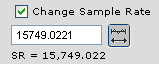

|
|
Mobileer Instrument EditorCONFIDENTIAL and PROPRIETARY - © 2002-6 Mobileer Inc. |
|
|
Mobileer Instrument EditorCONFIDENTIAL and PROPRIETARY - © 2002-6 Mobileer Inc. |
When you record your raw sample in the studio you should record them at a high sample rate, eg. 44100 Hz or 48000 Hz. This way you are starting with raw material of high quality.
But you may be producing a wavetable that will be played on a synthesizer running at 16000 Hz. If you used a 44100 Hz sample in that case then you would be wasting memory. That is because a wavetable size is proportional to its sample rate. A 44100 Hz file is bigger than a 16000 Hz file. You won't hear the higher quality of the 44100 Hz file if it's played at 12000 Hz so the fidelity is wasted. You should, therefore, resample the original wave file to create a wavetable at a lower sample rate.
Note that you can change the sample rate for an entire wave tree in a batch process if you wish. Select part of wave tree then select "Change Sample Rate" in File menu of WaveTable tab. This could be handy if you want to use existing wavetables for a new product that can support a higher sample rate, or needs a lower sample rate.